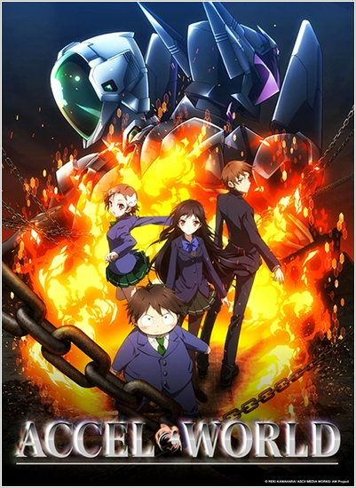

A


Accel World


If this site doesn't have what you are looking for then you can use the box below to search on Google. Check back again, I am constantly adding more content

If this site doesn't have what you are looking for then you can use the box below to search on Google. Check back again, I am constantly adding more content